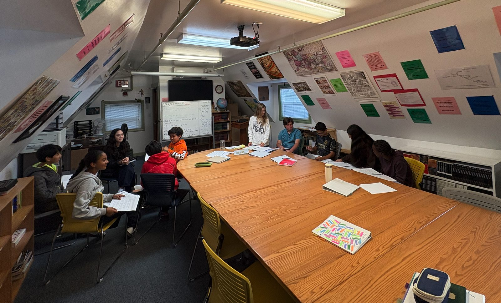

October 2026 History 8 Class Newsletter

Hello eighth graders, and eighth-grade families! Here's our first class newsletter of the year. We've gotten off to a great start, beginning with a review of our material from last year, Ancient Rome, Islam, and the Mongols, plus a discussion of what "modern" even means, since the Early Modern period is our focus this year! We left off last year at a key moment in world history, the end of the "Middle Ages" with the fall of Constantinople and the need (at least from a European point of view) to find new seaborne trade routes to Asia in order not to travel through Muslim lands. This has led to some great discussions on Portuguese and Spanish exploration and the conquest of the Aztecs from Spanish and Aztec points of view. We've read Columbus's letter, Bartolomé de las Casas, and Bernal Díaz's eyewitness account alongside the historian Camilla Townsend's Fifth Sun, which tells the same story with Aztec voices in it. How does each writer describe the people he meets, and what is he really after in describing them that way? The eighth graders did a great job on their comparison paragraphs! We've also visited the Oakland Museum, covered the Columbian Exchange and mercantilism, and just started our chapter on sugar and the birth of the global market. How did a luxury for the rich become a staple for everyone, and what did it cost? Our first Current Events Day presentation of the year is next week, too. After that, we'll wrap up our Exploration unit and move on to the Protestant Reformation, followed by the Scientific Revolution and the Enlightenment, and the French Revolution in the spring!